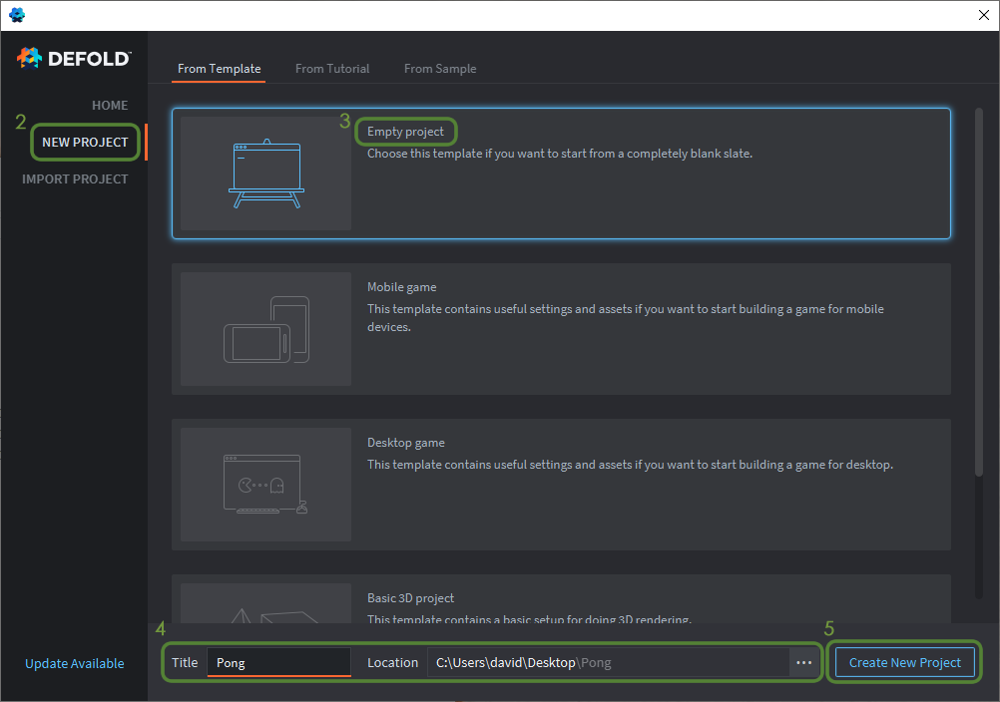
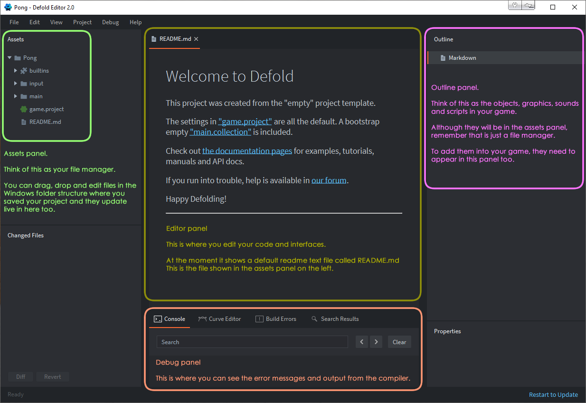
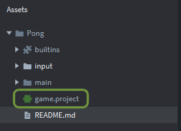
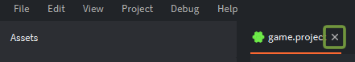
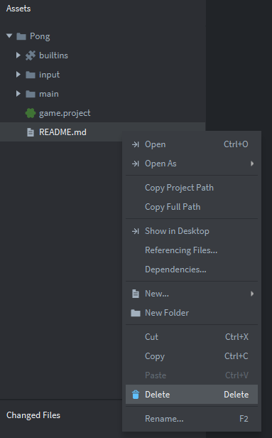

Tutorials for 2D games projects
Pong | Starting a new Defold project.
- Launch Defold.
- Choose 'New project' (From Template)
- Choose 'Empty project'.
Although you could use the 'Mobile game' or 'Desktop game' template it really doesn't do too much for you, so you might as well learn how you can configure the game settings for yourself so you know how to change them in future projects. You will still get a basic boilerplate even by choosing an empty project.
Help - I can't download a new blank project in Defold
If your network permissions prevent you downloading a new project, use our boilerplate files instead.
- Change the title to 'Pong'. Make sure the location is where you want to save the project.
- Click 'Create New Project'.

Before we go any further, let's take a quick look at the Defold IDE. In particular, you don't want to confuse the assets panel with the outline panel. They can look quite similar, but they serve different purposes in Defold. Remember for the future that the assets panel is really just a file explorer. The game components must be in the outline panel for your game to work.

You can change the properties of your game such as the display resolution, physics settings and many more attributes in the 'game.project' file in the assets panel.
You don't need to make any changes for this game, but double click the 'game.project' file in the assets panel to take a look. It will give you a brief insight into the capability of the Defold IDE.

Close the open file by clicking the X next to the name of the file at the top of the screen.

You can delete the README.md file. Right click the file and choose 'Delete' from the context menu. You will see the other context-sensitive options for assets too.

That's a quick tour of the Defold IDE complete. The next stage is to import the graphics we are going to use in our game. Stage 2 >
 Craig'n'Dave | Version 1.3
Craig'n'Dave | Version 1.3